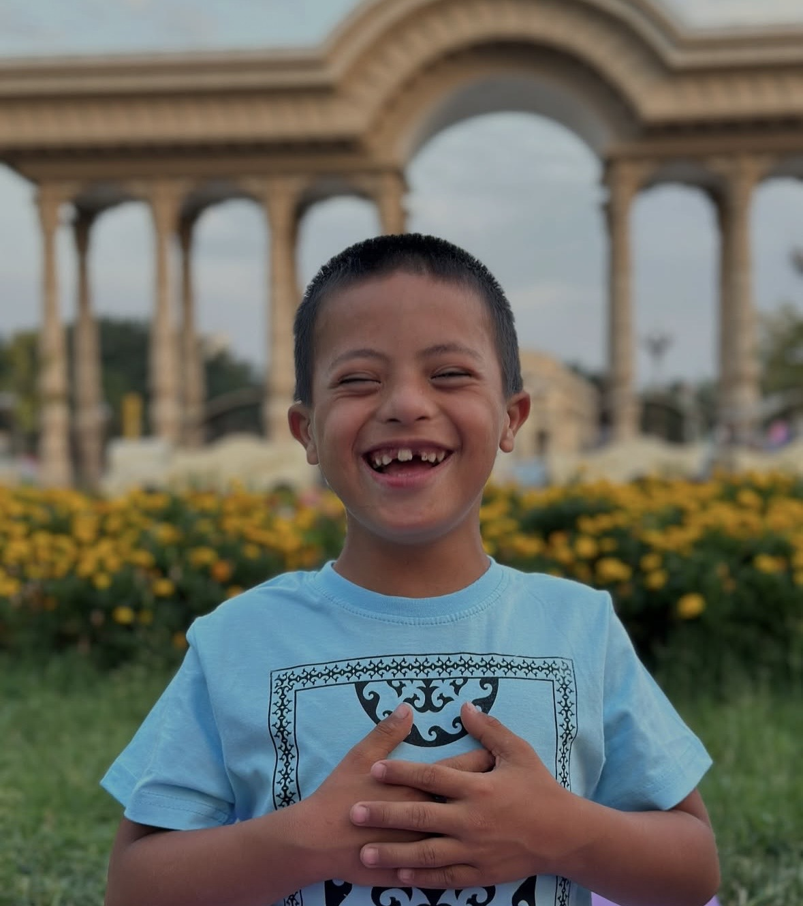
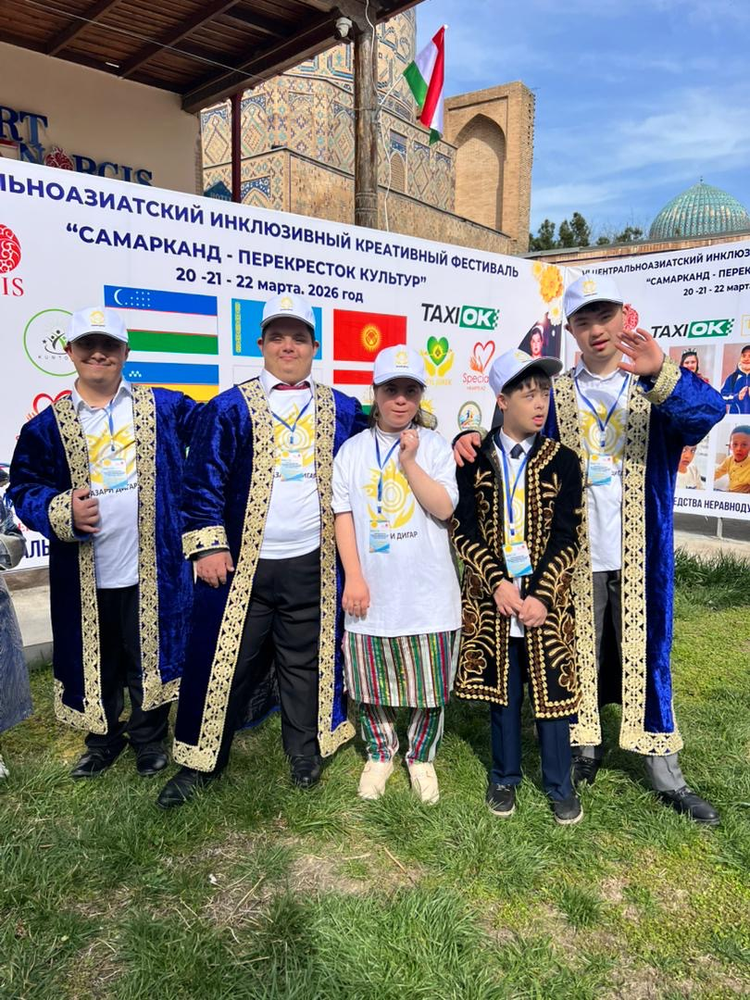
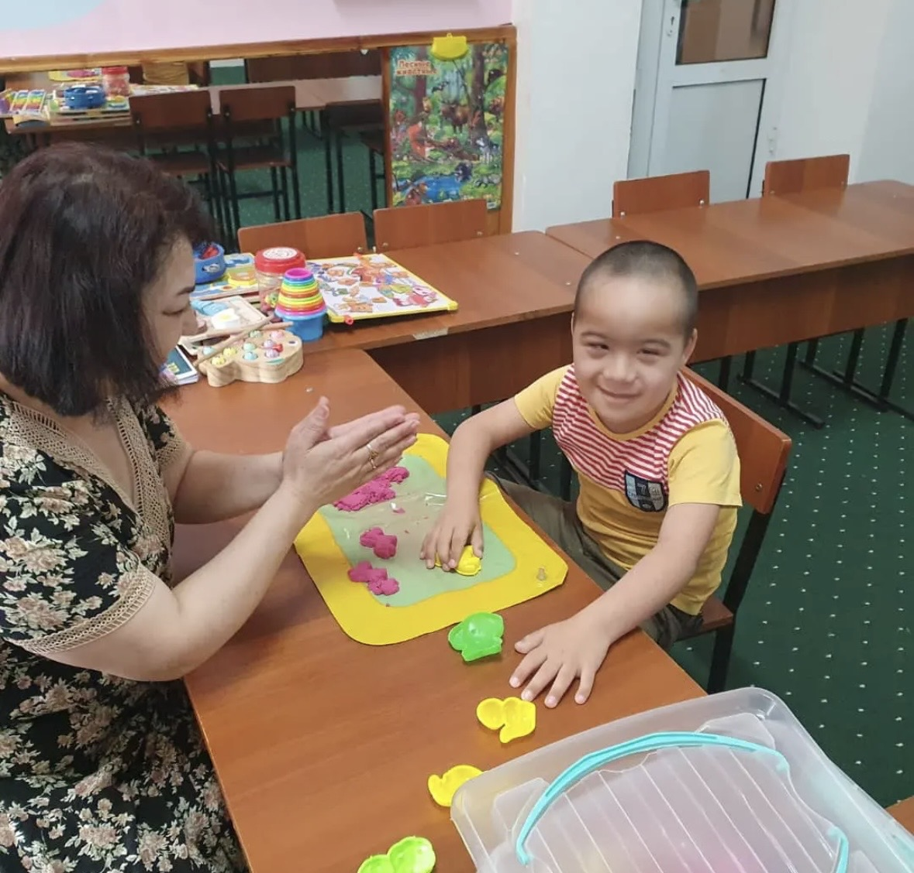
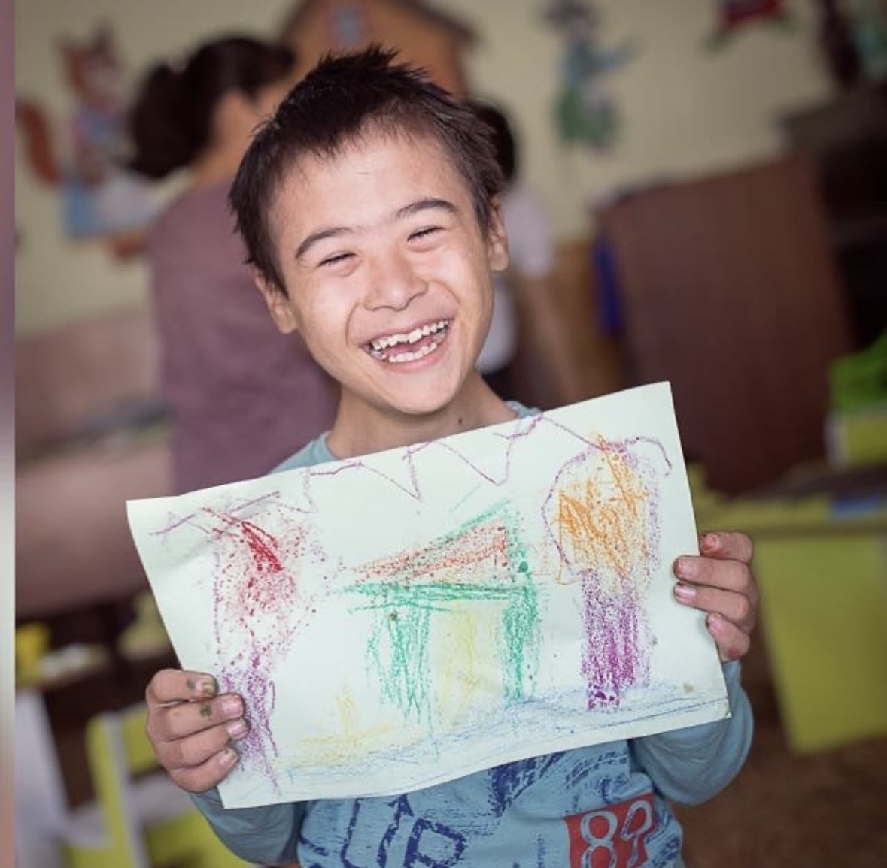
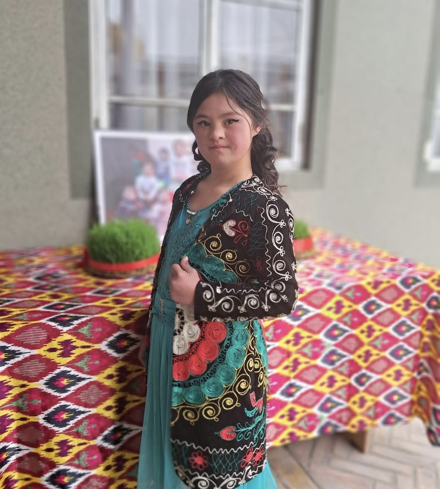

Our mission
To improve the lives of people with Down syndrome in Tajikistan by supporting their families, widening access to learning and care, and building understanding in their communities.
US 501(c)(3) nonprofit · Serving Tajikistan
Nazari Digar stands with people with Down syndrome and their families in Tajikistan, so that every person is seen for who they are and has the chance to learn, belong and thrive.


Who we are
In Tajik, Nazari Digar means “a different view.” That is what we work toward: a society that looks at a person with Down syndrome and sees ability, personality and potential.
We are a charitable organization registered in the United States. We connect supporters here with families in Tajikistan, where services and public understanding for people with Down syndrome are still limited.
Why we exist
To improve the lives of people with Down syndrome in Tajikistan by supporting their families, widening access to learning and care, and building understanding in their communities.
A Tajikistan where every person with Down syndrome is welcomed, valued and included, at home, at school, at work and in public life.
What we do
From the day a child is born through young adulthood, we support people with Down syndrome and their families in Tajikistan.



Yearly checkups, blood work, and vision, thyroid and cardiology checks.
Speech, physical, occupational and art therapy, at our center and through home visits, plus weekly yoga.
We provide jobs for young adults with Down syndrome, building skills and independence.
Monthly psychological support and training sessions for moms.
Newborn supplies and a booklet about Down syndrome, given to new families right at the hospital.
Food and medicine for families facing hardship.
Join us
Moments through the year when our community comes together.
A ladies-only fundraising event led by Ustadha Dunia Shuaib. Sunday, November 8, 2026 at 12:00 pm.
Bukhari Community Center, 1769 86th St, Fl 2, Brooklyn, NY 11214
Get tickets Tickets will be available here soon.
Celebrated around the world every March 21. Join us in honoring people with Down syndrome and sharing their stories.
Each October we share stories from families in Tajikistan and invite friends in the US to learn and give.
Ways to give
Every contribution supports people with Down syndrome and their families in Tajikistan.
Secure giving through Zeffy. You will receive a receipt by email.
Online giving is opening soon. To make a gift today, please contact us and we will help you directly.
Contact us to giveNazari Digar is a 501(c)(3) nonprofit organization. Contributions are tax-deductible to the extent permitted by law .
A recurring gift, at any amount, lets us plan ahead with families.
Many US employers match charitable gifts. Ask your HR team whether yours does.
Offer your time, skills or network. We would love to hear from you.
Get in touch
Questions about our work, giving, volunteering or partnership? We would be glad to hear from you.